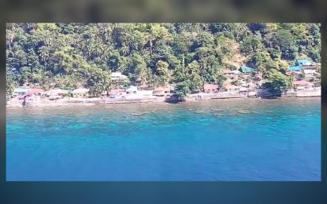

MANILA - The Catholic Church leadership and an environmental NGO are jointly advocating for more stringent laws to safeguard the Verde Island Passage (VIP), a biologically diverse strait between Luzon and Mindoro islands. At an "awareness summit," Bishop Moises Cuevas stressed the ecological threats to the VIP, such as overfishing, habitat destruction, pollution, and climate change. Citing Pope Francis's Laudato Si, Bishop Cuevas emphasized the Christian responsibility to care for the earth, considering the VIP as an unparalleled ecological treasure. Approximately 2 million fishermen depend on the VIP for their livelihoods, making its preservation crucial for both local communities and the national economy.
The two-day summit, themed "Our VIP: Charting a Sustainable Future for the Verde Island Passage," aims to address challenges and propose initiatives for VIP protection. Fr. Edwin Gariguez, from the Protect VIP movement, stated that the summit intends to create short-, medium-, and long-term plans for protection while fostering collaboration among stakeholders. The organizers aspire to guide future legislation safeguarding the 1.14 million-hectare ocean stretch from threats like natural gas exploration and oil spills. The Center for Energy, Ecology, and Development (CEED) referred to VIP as the "center of the center of marine shore fish biodiversity globally" and highlighted its recent recognition as a "Hope Spot" by the world ecological community, acknowledging its rich biodiversity and cultural significance. Home to 300 coral species and 1,736 fish species, the VIP is often dubbed the "Amazon of the Oceans."

CCC to real estate industry: embrace green practices